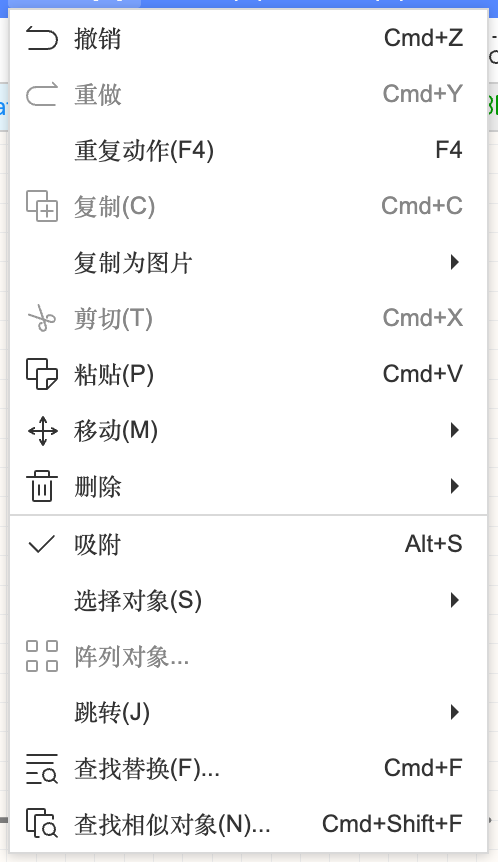
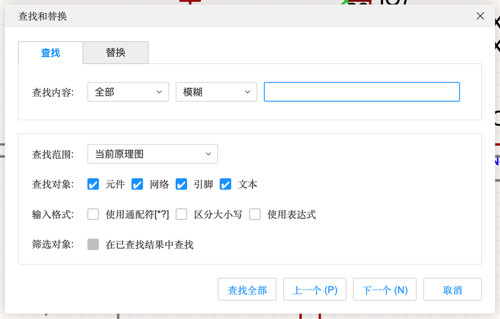
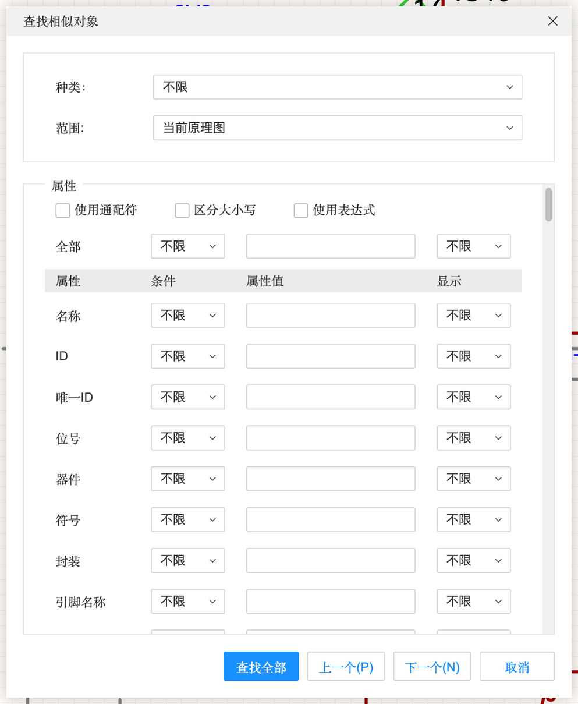
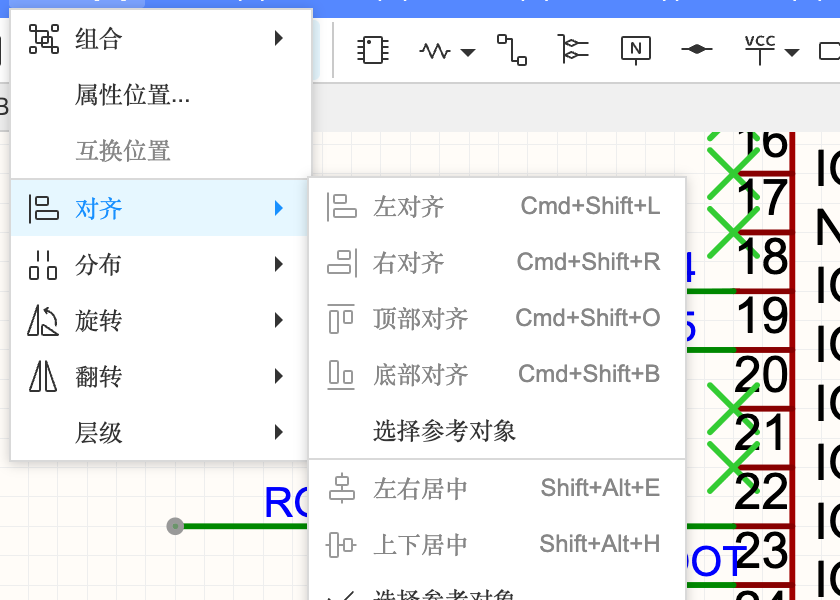
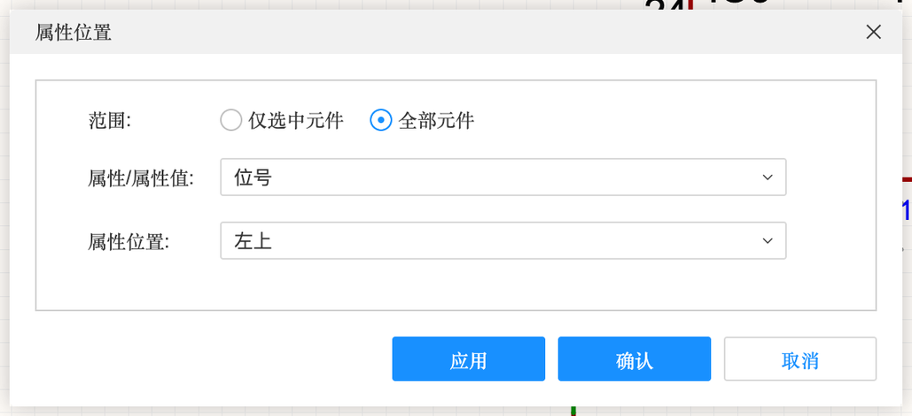
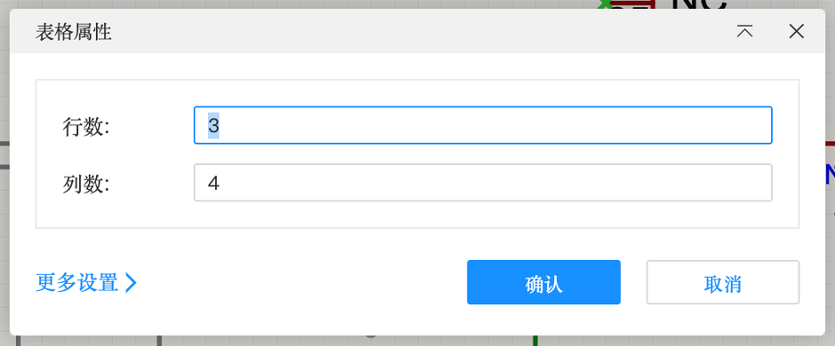

4.3 编辑技巧与绘图
画图快不快，一半靠编辑技巧：怎么一次选中一批东西、怎么批量改属性、怎么对齐排整齐。再加上折线、矩形、文本、表格这些“绘图注释”工具，就能画出又快又好看的原理图。
编辑技巧#

选择#
| 操作 | 效果 |
|---|---|
| 单击 | 选中一个对象 |
| ⇧ + 单击 | 加选 / 减选 |
| 左键从左往右拖框 | 只选中完全在框内的对象 |
| 左键从右往左拖框 | 选中碰到框的所有对象（方便选一串导线） |
| ⌘A | 全选（⚠️ 光标在输入框里时是全选文字；见 A-4 的坑） |
| 「编辑」→「选择对象」 | 按类型选（全部元件 / 全部导线 / 全部文字…） |
| 鼠标下有好几个东西叠在一起时按 G | 在它们之间轮流切换选择 |
复制、粘贴、移动#
- ⌘C / ⌘V / ⌘X：复制 / 粘贴 / 剪切。可以跨图页、甚至跨工程粘贴。
- 「复制为图片」：把选中的部分复制成图片，直接粘贴进 Word、PPT 写报告。
- 按住 ⌃ 拖动 = 拖出一份副本（「设置」里的“Ctrl 拖动复制”）。
- 「移动」（M）：以中心为基准移动选中的东西；方向键微调。
- 粘贴外部图片：从网页或截图工具复制一张图，直接在画布上 ⌘V。
阵列对象#
「编辑」→「阵列对象…」：选中一个对象，按行列数和间距一次复制出一排或一个矩阵。比如 8 个一模一样的 LED+电阻。要先选中对象菜单项才有效（本教程实测没选中时点击没有弹出对话框）。
查找替换 ⌘F#

查找和替换
| 选项 | 含义 |
|---|---|
| 查找 / 替换（顶部标签） | 只找，还是找到后替换成别的文字 |
| 查找内容 | 前面两个下拉：在哪个字段找（全部 / 位号 / 名称…）、匹配方式（模糊 / 精确） |
| 查找范围 | 当前原理图 / 当前图页等 |
| 查找对象 | 元件 / 网络 / 引脚 / 文本，勾哪些找哪些 |
| 输入格式 | 使用通配符（* 代表任意多个字，? 代表一个字）/ 区分大小写 / 使用表达式 |
| 筛选对象 | 在上次的查找结果里继续找 |
| 查找全部 / 上一个 / 下一个 | 找到后底部「查找结果」面板列出全部，点一条就跳过去 |
例：找 R* 能列出所有电阻；替换功能可以把所有网络名 LED_A 改成 LED1。
查找相似对象 ⌘⇧F（批量修改神器）#

先选中一个对象（比如一个 10kΩ 电阻），打开它，然后把“值”设为相同、其他设为不限，点「查找全部」——所有 10kΩ 电阻都被选中了。接着在右侧属性面板改一次，就全部改好。用来批量换型号、批量改字体、批量隐藏某个属性特别快。
跳转#
「编辑」→「跳转」：跳到某个坐标、某个位号的元件、某个网络。元件多的时候比用眼睛找快得多。
对齐、分布、旋转、翻转、层级（布局菜单）#

| 子菜单 | 内容 | 快捷键 |
|---|---|---|
| 对齐 | 左对齐、右对齐、顶部对齐、底部对齐、左右居中、上下居中、对齐网格；“选择参考对象”= 以你点的那个为准对齐 | 左对齐 ⌘⇧L、右对齐 ⌘⇧R、顶部 ⌘⇧O、底部 ⌘⇧B、左右居中 ⇧⌥E、上下居中 ⇧⌥H |
| 分布 | 水平等距分布、垂直等距分布（让一排元件间距相等） | — |
| 旋转 | 左向旋转、右向旋转 | 空格 |
| 翻转 | 左右翻转、上下翻转 | X / Y |
| 层级 | 移到顶层 / 移到底层（重叠时谁盖住谁） | — |
| 组合 | 把几个对象组合成一个整体，一起移动（⌘G） | — |
| 属性位置… | 统一设置选中元件的位号、值等文字放在元件的哪一侧 | — |
| 互换位置 | 选中两个元件，交换它们的位置 | — |

绘图与注释#
「放置」菜单下半部分是绘图工具。它们不影响电路连接，只用来让图更好读：
| 工具 | 快捷键 | 用途 |
|---|---|---|
| 折线 | ⌥L | 画箭头、分隔线 |
| 圆弧 / 贝塞尔曲线 | ⌥A / ⌥Z | 画示意图形 |
| 圆形 / 椭圆 | ⌥C / ⌥E | 圈出重点 |
| 矩形 | ⌥R | 给模块画分区框（案例 B 的 6 个虚线框） |
| 文本 | ⌥T | 模块标题、注意事项、版本说明 |
| 图片… | — | 放 Logo、实物照片、波形截图 |
| 表格… | — | 放引脚分配表、修改记录表 |
